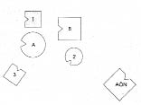

HELLINGER Jonas’a Bu aileye kimler dahil?
JONAS Babam, annem, erkek kardeşim ve ben.
HELLINGER Çekirdek ailede başka bir eksik var mı?
JONAS Evet, bir de ölü doğan kız kardeşim.
HELLINGER O önemli. Yeri neresi?
JONAS Benimle kardeşim arasında.
HELLINGER Ana babandan biri daha önce bir evlilik ya da nişanlılık geçirmiş mi?
JONAS Evet, annem daha önce nişanlanmış. Nişanlısı savaşta ölmüş.
HELLINGER O halde onu da dizime ekleyelim.
1. Resim

B Baba
A Anne
1 İlk çocuk, oğul (=Jonas)
+2 İkinci çocuk, kız, ölü doğmuş
3 Üçüncü çocuk, oğul
+AÖN Annenin savaşta ölen önceki nişanlısı
HELLINGER Annenin önceki nişanlısını dizen Jonas’a Senin özdeşleşmen şimdiden görülebiliyor.
JONAS Nişanlıyla özdeşleşmem mi?
HELLINGER Evet.
HELLINGER Hemen çözümün dizimini yapıyorum, çünkü bu durumda bu gayet kolay.
2. Resim
HELLINGER Baba nasıl?
BABA Benim için uygun ama nişanlı hâlâ biraz rahatsız ediyor.
HELLINGER Onurlandırılması gerekiyor.
Anne nasıl?
ANNE Nişanlıyı görmek için biraz dönmek istiyorum. Güler.
HELLINGER Evet, doğru. Sisteme o da dahil. Ama kocanın arada yer alması gerek, yoksa ilişki yürümez.
Jonas’ın temsilcisine En büyük oğul nasıl?
İLK ÇOCUK Ben çok iyiyim.
HELLINGER Küçük oğul nasıl?
ÜÇÜNCÜ ÇOCUK Çok sinirliyim ama neden, bilmiyorum.
HELLINGER Ölmüş kız kardeş nasıl?
İKİNCİ ÇOCUK İyi.
HELLINGER Jonas’a Yerine geçmek ister misin?
Dizimde kendi yerini alan Jonas’a Şimdi annene bir cümle söyleyebilirsin, çok basit bir cümle. Babana bak ve annene: “Benim babam o” de.
Jonas güler ve nişanlıya bakar.
HELLINGER Hayır, hayır.
Gruba Önceki nişanlıyı temsil ettiği için babayla kendiliğinden rekabete giriyor. Nişanlı anne için önemli, Jonas da annesi karşısında onu temsil ediyor.
Jonas’a Yaşamını anlatırken uzaklara gittiğini söyledin. Bu tam da nişanlının yaptığı şeydi. Ama eğer babanın yanında durursan kalabilirsin. Senin için doğru yer orası. O halde annene “Babam o” de.
JONAS Anneye O.
HELLINGER “Yalnızca o.”
JONAS Yalnızca o.
HELLINGER “Ötekiyle benim hiçbir ilgim yok.”
JONAS Güler Evet, benim ötekiyle hiçbir ilgim yok. Babam o.
HELLINGER Sana Tanrıyı arayanlar üzerine bir şey söylemek istiyorum. Söyleyeyim mi?
JONAS Evet.
HELLINGER Onlar babalarını arar. Bulduklarında Tanrı arayışı sona erer. Ya da başkalaşır. -Tamam, bu kadar.
Gruba Başka sorunuz var mı?
FRANK Bazen özdeşleşen kişileri önce bir kenarda diziyorsun. Bu vakada bunu yapmadın.
HELLINGER Hayır, bunu gereksiz kılacak kadar açıktı burada durum. Kurs ilerledikçe pek çok şey açığa kavuştuğu için çözüm için gereken adımlar da azalır.